Dog Breed Classification
Table of Contents
Introduction
This application is a dog-breed classifier. It takes as input an image and detects if it's an image of either a human or a dog and if it's either one of those then it finds the dog-breed classification that the subject of the image most resembles. If it's neither a human or a dog then it emits an error message. To do this I'm going to try two libraries for each of the human face-detectors and dog detectors and I'm also going to try three Neural Networks to try and classify the dog breeds.
Set Up
This section does some preliminary set-up for the code that comes later.
Imports
Python
from functools import partial
from pathlib import Path
import os
import warnings
From Pypi
from dotenv import load_dotenv
from PIL import Image, ImageFile
from torchvision import datasets
import cv2
import face_recognition
import matplotlib.cbook
warnings.filterwarnings("ignore", category=matplotlib.cbook.mplDeprecation)
import matplotlib.pyplot as pyplot
import matplotlib.image as mpimage
import matplotlib.patches as patches
import numpy
try:
import pyttsx3
SPEAKABLE = True
except ImportError:
print("pyttsx3 not available")
SPEAKABLE = False
import seaborn
import torch
import torchvision.models as models
import torch.nn as nn
import torch.nn.functional as F
import torch.optim as optimizer
import torchvision.transforms as transforms
This Project
This is code that I wrote to maybe make it easier to work with.
from neurotic.tangles.data_paths import DataPathTwo
from neurotic.tangles.timer import Timer
from neurotic.constants.imagenet_map import imagenet
Plotting
get_ipython().run_line_magic('matplotlib', 'inline')
get_ipython().run_line_magic('config', "InlineBackend.figure_format = 'retina'")
seaborn.set(style="whitegrid",
rc={"axes.grid": False,
"font.family": ["sans-serif"],
"font.sans-serif": ["Open Sans", "Latin Modern Sans", "Lato"],
"figure.figsize": (8, 6)},
font_scale=1)
Set the Random Seed
numpy.random.seed(seed=2019)
Check If CUDA Is Available
device = torch.device("cuda" if torch.cuda.is_available() else "cpu")
print(device)
cuda
Handle Truncated Images
There seems to be at least one image that is truncated which will cause an exception when it's loaded so this next setting lets us ignore the error and keep working.
ImageFile.LOAD_TRUNCATED_IMAGES = True
Build the Timer
The timer times how long a code-block takes to run so that if I run it more than once I'll know if it will take a while.
timer = Timer(beep=SPEAKABLE)
The Data Paths
The data-sets are hosted online and need to be downloaded.
- This is a download link for the dog dataset.
- This is a download link for the the human dataset.
I've already downloaded them and put the path to the folders in a .env file so this next block gets the paths so we can load the data later.
The Model Path
The models turn out to take up a lot of space so I'm saving them outside of the repository.
MODEL_PATH = DataPathTwo(folder_key="MODELS")
Dog Paths
This is a class to hold the paths for the dog Images
class DogPaths:
"""holds the paths to the dog images"""
def __init__(self) -> None:
self._main = None
self._training = None
self._testing = None
self._validation = None
self._breed_count = None
load_dotenv()
return
@property
def main(self) -> DataPathTwo:
"""The path to the main folder"""
if self._main is None:
self._main = DataPathTwo(folder_key="DOG_PATH")
return self._main
@property
def training(self) -> DataPathTwo:
"""Path to the training images"""
if self._training is None:
self._training = DataPathTwo(folder_key="DOG_TRAIN")
return self._training
@property
def validation(self) -> DataPathTwo:
"""Path to the validation images"""
if self._validation is None:
self._validation = DataPathTwo(folder_key="DOG_VALIDATE")
return self._validation
@property
def testing(self) -> DataPathTwo:
"""Path to the testing images"""
if self._testing is None:
self._testing = DataPathTwo(folder_key="DOG_TEST")
return self._testing
@property
def breed_count(self) -> int:
"""Counts the number of dog breeds
This assumes that the training folder has all the breeds
"""
if self._breed_count is None:
self._breed_count = len(set(self.training.folder.iterdir()))
return self._breed_count
def check(self) -> None:
"""Checks that the folders are valid
Raises:
AssertionError: folder doesn't exist
"""
self.main.check_folder()
self.training.check_folder()
self.validation.check_folder()
self.testing.check_folder()
return
Now I'll build the dog-paths.
dog_paths = DogPaths()
Human Path
This is the path to the downloaded Labeled Faces in the Wild data set.
human_path = DataPathTwo(folder_key="HUMAN_PATH")
Check the Paths
This makes sure that the folders exist and shows where they are.
print(dog_paths.main.folder)
print(dog_paths.training.folder)
print(dog_paths.testing.folder)
print(dog_paths.validation.folder)
dog_paths.check()
print(human_path.folder)
human_path.check_folder()
/home/hades/data/datasets/dog-breed-classification/dogImages /home/hades/data/datasets/dog-breed-classification/dogImages/train /home/hades/data/datasets/dog-breed-classification/dogImages/test /home/hades/data/datasets/dog-breed-classification/dogImages/valid /home/hades/data/datasets/dog-breed-classification/lfw
Count The Breeds
To build the neural network I'll need to know how many dog breeds there are. I made it an attribute of the DogPath class and I'll just inspect it here.
print("Number of Dog Breeds: {}".format(dog_paths.breed_count))
Number of Dog Breeds: 133
Load the Files
For this first part we're going to load in all the files and ignore the train-validation-test split for the dog-images.
timer.start()
human_files = numpy.array(list(human_path.folder.glob("*/*")))
dog_files = numpy.array(list(dog_paths.main.folder.glob("*/*/*")))
timer.end()
Started: 2019-01-13 14:05:09.566221 Ended: 2019-01-13 14:05:42.932863 Elapsed: 0:00:33.366642
print('There are {:,} total human images.'.format(len(human_files)))
print('There are {:,} total dog images.'.format(len(dog_files)))
There are 13,233 total human images. There are 8,351 total dog images.
So we have a bit more human images than dog images.
Some Helper Code
This is code meant to help with the other code.
Tee
I wrote this for the jupyter notebook because it loses the output if the server disconnects. I think it will also make it easier to use multiproccessing so I can train things in parallel. But I don't think I'm using it right now.
class Tee:
"""Save the input to a file and print it
Args:
log_name: name to give the log
directory_path: path to the directory for the file
"""
def __init__(self, log_name: str,
directory_name: str="../../../logs/dog-breed-classifier") -> None:
self.directory_name = directory_name
self.log_name = log_name
self._path = None
self._log = None
return
@property
def path(self) -> Path:
"""path to the log-file"""
if self._path is None:
self._path = Path(self.directory_name).expanduser()
assert self._path.is_dir()
self._path = self._path.joinpath(self.log_name)
return self._path
@property
def log(self):
"""File object to write log to"""
if self._log is None:
self._log = self.path.open("w", buffering=1)
return self._log
def __call__(self, line: str) -> None:
"""Writes to the file and stdout
Args:
line: text to emit
"""
self.log.write("{}\n".format(line))
print(line)
return
F1 Scorer
I'm going to be comparing two models for both the humans and dogs, this scorer will focus on the F1 score, but will emit some other information as well.
class F1Scorer:
"""Calculates the F1 and other scores
Args:
predictor: callable that gets passed and image and outputs boolean
true_images: images that should be predicted as True
false_images: images that shouldn't be matched by the predictor
done_message: what to announce when done
"""
def __init__(self, predictor: callable, true_images:list,
false_images: list,
done_message: str="Scoring Done") -> None:
self.predictor = predictor
self.true_images = true_images
self.false_images = false_images
self.done_message = done_message
self._timer = None
self._false_image_predictions = None
self._true_image_predictions = None
self._false_positives = None
self._false_negatives = None
self._true_positives = None
self._true_negatives = None
self._false_positive_rate = None
self._precision = None
self._recall = None
self._f1 = None
self._accuracy = None
self._specificity = None
return
@property
def timer(self) -> Timer:
if self._timer is None:
self._timer = Timer(message=self.done_message, emit=False)
return self._timer
@property
def false_image_predictions(self) -> list:
"""Predictions made on the false-images"""
if self._false_image_predictions is None:
self._false_image_predictions = [self.predictor(str(image))
for image in self.false_images]
return self._false_image_predictions
@property
def true_image_predictions(self) -> list:
"""Predictions on the true-images"""
if self._true_image_predictions is None:
self._true_image_predictions = [self.predictor(str(image))
for image in self.true_images]
return self._true_image_predictions
@property
def true_positives(self) -> int:
"""count of correct positive predictions"""
if self._true_positives is None:
self._true_positives = sum(self.true_image_predictions)
return self._true_positives
@property
def false_positives(self) -> int:
"""Count of incorrect positive predictions"""
if self._false_positives is None:
self._false_positives = sum(self.false_image_predictions)
return self._false_positives
@property
def false_negatives(self) -> int:
"""Count of images that were incorrectly classified as negative"""
if self._false_negatives is None:
self._false_negatives = len(self.true_images) - self.true_positives
return self._false_negatives
@property
def true_negatives(self) -> int:
"""Count of images that were correctly ignored"""
if self._true_negatives is None:
self._true_negatives = len(self.false_images) - self.false_positives
return self._true_negatives
@property
def accuracy(self) -> float:
"""fraction of correct predictions"""
if self._accuracy is None:
self._accuracy = (
(self.true_positives + self.true_negatives)
/(len(self.true_images) + len(self.false_images)))
return self._accuracy
@property
def precision(self) -> float:
"""True-Positive with penalty for false positives"""
if self._precision is None:
self._precision = self.true_positives/(
self.true_positives + self.false_positives)
return self._precision
@property
def recall(self) -> float:
"""fraction of correct images correctly predicted"""
if self._recall is None:
self._recall = (
self.true_positives/len(self.true_images))
return self._recall
@property
def false_positive_rate(self) -> float:
"""fraction of incorrect images predicted as positive"""
if self._false_positive_rate is None:
self._false_positive_rate = (
self.false_positives/len(self.false_images))
return self._false_positive_rate
@property
def specificity(self) -> float:
"""metric for how much to believe a negative prediction
Specificity is 1 - false positive rate so you only need one or the other
"""
if self._specificity is None:
self._specificity = self.true_negatives/(self.true_negatives
+ self.false_positives)
return self._specificity
@property
def f1(self) -> float:
"""Harmonic Mean of the precision and recall"""
if self._f1 is None:
TP = 2 * self.true_positives
self._f1 = (TP)/(TP + self.false_negatives + self.false_positives)
return self._f1
def __call__(self) -> None:
"""Emits the F1 and other scores as an org-table
"""
self.timer.start()
print("|Metric|Value|")
print("|-+-|")
print("|Accuracy|{:.2f}|".format(self.accuracy))
print("|Precision|{:.2f}|".format(self.precision))
print("|Recall|{:.2f}|".format(self.recall))
print("|Specificity|{:.2f}".format(self.specificity))
# print("|False Positive Rate|{:.2f}|".format(self.false_positive_rate))
print("|F1|{:.2f}|".format(self.f1))
self.timer.end()
print("|Elapsed|{}|".format(self.timer.ended - self.timer.started))
return
Get Human
This will grab the name of the person in an image file (based on the file name).
def get_name(path: Path) -> str:
"""Extracts the name of the person from the file name
Args:
path: path to the file
Returns:
the name extracted from the file name
"""
return " ".join(path.name.split("_")[:-1]).title()
Display Image
A little matplotlib helper.
def display_image(image: Path, title: str, is_file: bool=True) -> tuple:
"""Plot the image
Args:
image: path to the image file or image
title: title for the image
is_file: first argument is a file name, not an array
Returns:
figure, axe
"""
figure, axe = pyplot.subplots()
figure.suptitle(title, weight="bold")
axe.tick_params(dict(axis="both",
which="both",
bottom=False,
top=False))
axe.get_xaxis().set_ticks([])
axe.get_yaxis().set_ticks([])
if is_file:
image = Image.open(image)
image = axe.imshow(image)
return figure, axe
First Prediction
This function is used to grab images that register as false-positives.
def first_prediction(source: list, start:int=0) -> int:
"""Gets the index of the first True prediction
Args:
source: list of True/False predictions
start: index to start the search from
Returns:
index of first True prediction found
"""
for index, prediction in enumerate(source[start:]):
if prediction:
print("{}: {}".format(start + index, prediction))
break
return start + index
Some Constants
The pre-trained models need to be normalized using the following means and standard deviations.
MEANS = [0.485, 0.456, 0.406]
DEVIATIONS = [0.229, 0.224, 0.225]
I'm going to offload the models that I move to the GPU while exploring before doing the final implementation so this list is to keep track of all of them.
MODELS = []
A Human Face Detector
I'm going to need a way to tell if an image has a human in it (or not), so I'll build two versions of a detector, one using OpenCV, and one using dlib.
For each detector I'm going to look at an example image before running an assessment of how well it did so I'll select one at random here.
sample_face = numpy.random.choice(human_files, 1)[0]
sample_name = get_name(sample_face)
print(sample_name)
David Anderson
figure, axe = display_image(sample_face, sample_name)
The Data Sets
To save some time I'm going to assess the detectors using random images from the data sets.
count = int(.1 * len(human_files))
human_files_short = numpy.random.choice(human_files, count)
dog_files_short = numpy.random.choice(dog_files, count)
print("{:,}".format(count))
1323
The Scorer
I'm going to re-use the same scorer for the dlib face-detector so to make it simpler I'll attach the correct images to the F1Scorer class.
human_scorer = partial(F1Scorer,
true_images=human_files_short,
false_images=dog_files_short)
OpenCV
Here I'll use OpenCV's implementation of Haar feature-based cascade classifiers (which you can grab from github) to detect human faces in images.
Extract the Pre-Trained Face Detector
First I'll grab the path to the XML file that defines the classifier.
haar_path = DataPathTwo("haarcascade_frontalface_alt.xml", folder_key="HAAR_CASCADES")
print(haar_path.from_folder)
assert haar_path.from_folder.is_file()
/home/hades/data/datasets/dog-breed-classification/haarcascades/haarcascade_frontalface_alt.xml
Now we can load it.
face_cascade = cv2.CascadeClassifier(str(haar_path.from_folder))
Inspect An Image
First let's see what the face detector detects by looking at a single image.
Convert the BGR Image To Grayscale
To do the face-detection we need to convert the image to a grayscale image.
gray = cv2.cvtColor(image, cv2.COLOR_BGR2GRAY)
Find Some Faces In the Image
Now we can find the coordinates for bounding boxes for any faces that OpenCV finds in the image.
faces = face_cascade.detectMultiScale(gray)
print('Number of faces detected:', len(faces))
Number of faces detected: 1
Show Us the Box
The boxes are defined using a four-tuple with the x and y coordinates of the top-left corner of the box first followed by the width and height of the box. This next block adds the box to the image.
for (x,y,w,h) in faces:
# add bounding box to color image
cv2.rectangle(image, (x,y), (x+w,y+h), (255,0,0), 2)
To display the image we need to convert it to RGB.
cv_rgb = cv2.cvtColor(image, cv2.COLOR_BGR2RGB)
Now we can display the image with the bounding box.
figure, axe = display_image(cv_rgb, "OpenCV Face-Detection Bounding Box", False)
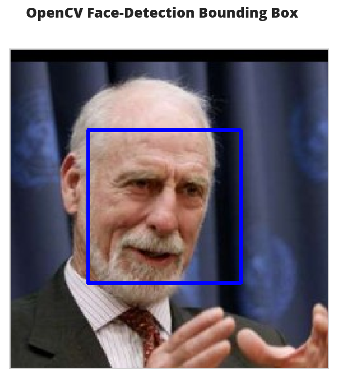
Write a Human Face Detector
Now that we know how it works, we can use the OpenCV face-recognizer to tell us if the image has a human in it (because there will be at least one bounding-box).
# returns "True" if face is detected in image stored at img_path
def face_detector(image_path: str) -> bool:
"""Detects human faces in an image
Args:
image_path: path to the image to check
Returns:
True if there was at least one face in the image
"""
image = cv2.imread(image_path)
gray = cv2.cvtColor(image, cv2.COLOR_BGR2GRAY)
faces = face_cascade.detectMultiScale(gray)
return len(faces) > 0
Assess the Human Face Detector
Here I'll check how well the face detector does using an F1 score. I'll also show some other metrics, but F1 is the single-value that I'll be focused on.
open_cv_scorer = human_scorer(face_detector)
open_cv_scorer()
| Metric | Value |
|---|---|
| Accuracy | 0.94 |
| Precision | 0.90 |
| Recall | 0.99 |
| Specificity | 0.89 |
| F1 | 0.94 |
| Elapsed | 0:02:42.880287 |
Overall the model seems to have done quite well. It was better at recall than specificity so it tended to classify some dogs as humans (around 11 %).
dogman_index = first_prediction(open_cv_scorer.false_image_predictions)
2: True
It looks like the third dog image was classified as a human by OpenCV.
source = dog_files_short[dogman_index]
name = get_name(source)
figure, axe = display_image(source,
"Dog-Human OpenCV Prediction ({})".format(name))
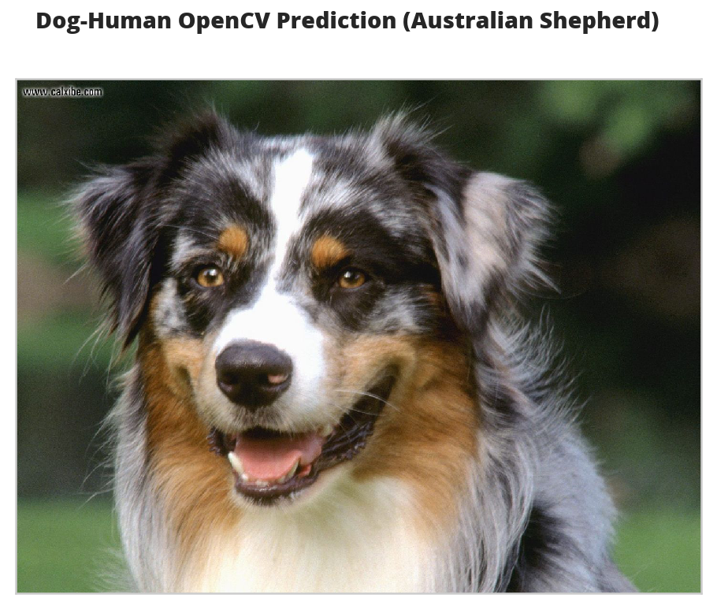
I guess I can see where this might look like a human face. Maybe.
DLIB
I'm also going to test face_recognition, a python interface to dlib's facial recognition code. Unlike OpenCV, face_recognition doesn't require you to do the image-conversions before looking for faces.
Inspect an Image
image = face_recognition.load_image_file(sample_face)
locations = face_recognition.face_locations(image)
image = mpimage.imread(sample_face)
figure, axe = display_image(image, "dlib Face Recognition Bounding-Box", False)
top, right, bottom, left = locations[0]
width = right - left
height = top - bottom
rectangle = patches.Rectangle((top, right), width, height, fill=False)
patch = axe.add_patch(rectangle)
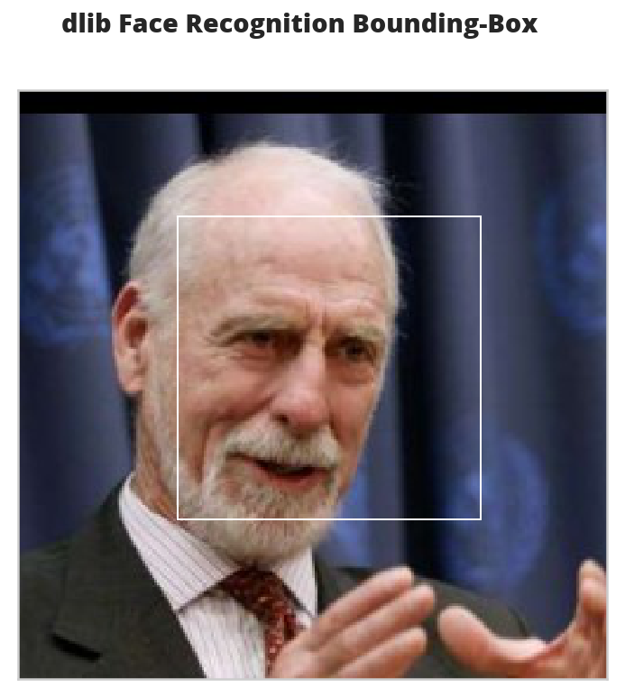
This box seems to be more tightly cropped than the Open CV version.
The Face Detecor
def face_recognition_check(image_path: str) -> bool:
"""This decides if an image has a face in it
Args:
image_path: path to an image
Returns:
True if there's at least one face in the image
"""
image = face_recognition.load_image_file(str(image_path))
locations = face_recognition.face_locations(image)
return len(locations) > 0
Assess the Face Detector
dlib_dog_humans = human_scorer(face_recognition_check)
dlib_dog_humans()
| Metric | Value |
|---|---|
| Accuracy | 0.95 |
| Precision | 0.92 |
| Recall | 1.00 |
| Specificity | 0.91 |
| F1 | 0.96 |
| Elapsed | 0:09:28.752909 |
Dlib took around four times as long to run as OpenCV did, but did better overall.
dlib_dog_human_index = first_prediction(dlib_dog_humans.false_image_predictions)
5: True
The dlib model didn't have a false positive for the third image like the OpenCV model did, but it did get the sixth image wrong.
source = dog_files_short[dlib_dog_human_index]
name = get_name(source)
figure, axe = display_image(source,
"Dog-Human DLib Prediction ({})".format(name))
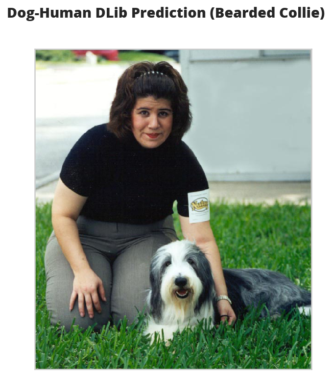
These photos with humans and dogs in them seem problematic.
face_recognition provides another model based on a CNN that I wanted to try but it gives me out-of-memory errors so I'll have to save that for later.
A Dog Detector
Now I'll take two pre-trained CNNs and use transfer learning to have them detect dogs in images.
A Dog Detector Function
If you look at the imagenet dictionary, you'll see that the categories for dogs have indices from 151 to 268, so without altering our models we can check if an image is a dog by seeing if they classify the image within this range of values.
DOG_LOWER, DOG_UPPER = 150, 260
def dog_detector(img_path: Path, predictor: object):
"""Predicts if the image is a dog
Args:
img_path: path to image file
predictor: callable that maps the image to an ID
Returns:
is-dog: True if the image contains a dog
"""
return DOG_LOWER < predictor(img_path) < DOG_UPPER
The VGG-16 Model
I'm going to use a VGG-16 model, along with weights that have been trained on ImageNet, a data set containing objects from one of 1000 categories.
Pytorch comes with a VGG 16 model built-in so we just have to declare it with the pretrained=True argument to download and load it.
timer.start()
VGG16 = models.vgg16(pretrained=True)
VGG16.eval()
VGG16.to(device)
MODELS.append(VGG16)
timer.end()
Started: 2019-01-13 14:43:39.512124 Ended: 2019-01-13 14:44:07.819057 Elapsed: 0:00:28.306933
Note: The first time you run this it has to download the state dictionary so it will take much longer than it would once you've run it at least once.
Making Predictions With the VGG 16 Model
In order to use the images with our model we have to run them through a transform. Even then, the forward-pass expects you to pass it a batch, not a single image, so you have to add an extra (fourth) dimension to the images to represent the batch. I found out how to fix the dimensions (using unsqueeze to add an empty dimension) from this blog post.
This next block sets up the transforms. Each pre-trained model expects a specific image-size for the inputs. In this case the VGG16 model expects a 224 x 224 image (which is why I set the IMAGE_SIZE to 224).
The images also have to be normalized using a specific set of means and standard deviations, but since pytorch uses the same ones for all the models I defined them at the top of this document because I'll be using them later for the inception model as well.
IMAGE_SIZE = 224
IMAGE_HALF_SIZE = IMAGE_SIZE//2
vgg_transform = transforms.Compose([transforms.Resize(255),
transforms.CenterCrop(IMAGE_SIZE),
transforms.ToTensor(),
transforms.Normalize(MEANS,
DEVIATIONS)])
VGG16 Predict
This is a function to predict what class an image is.
def VGG16_predict(img_path: str) -> int:
'''
Uses a pre-trained VGG-16 model to obtain the index corresponding to
predicted ImageNet class for image at specified path
Args:
img_path: path to an image
Returns:
Index corresponding to VGG-16 model's prediction
'''
image = Image.open(str(img_path))
image = vgg_transform(image).unsqueeze(0).to(device)
output = VGG16(image)
probabilities = torch.exp(output)
top_probability, top_class = probabilities.topk(1, dim=1)
return top_class.item()
Let's see what the model predicts for an image.
path = numpy.random.choice(dog_files_short)
print(path)
classification = VGG16_predict(path)
print(imagenet[classification])
/home/hades/data/datasets/dog-breed-classification/dogImages/valid/044.Cane_corso/Cane_corso_03122.jpg American Staffordshire terrier, Staffordshire terrier, American pit bull terrier, pit bull terrier
Our classifier recognizes that the image is a dog, but thinks that it's a Terrire, not a Cane Corso. Here's what it saw.
name = get_name(path)
figure, axe = display_image(path, name)
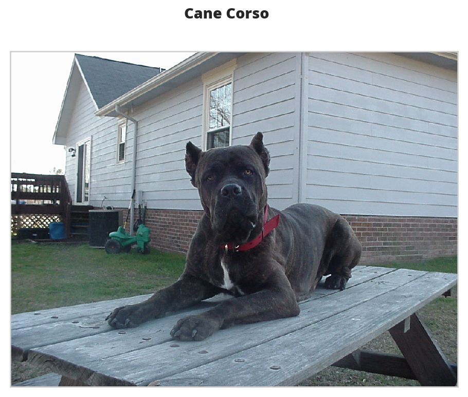
And this is what it thought it was (a bull-mastiff).

Assess the Dog Detector
Now, as with the human face-detectors, I'll calculate some metrics to see how the VGG16 dog-detector does.
dog_scorer = partial(F1Scorer, true_images=dog_files_short,
false_images=human_files_short)
vgg_predictor = partial(dog_detector, predictor=VGG16_predict)
vgg_scorer = dog_scorer(vgg_predictor)
vgg_scorer()
| Metric | Value |
|---|---|
| Accuracy | 0.95 |
| Precision | 0.99 |
| Recall | 0.92 |
| Specificity | 0.99 |
| F1 | 0.95 |
| Elapsed | 0:02:37.257690 |
Unlike the face-detectors, the VGG16 dog detector did better at avoiding false-positives than it did at detecting dogs.
Inception
The previous detector used the VGG 16 model, but now I'll try the Inception-v3 model, which was designed to use less resources than the VGG model, to do some dog-detection.
timer.start()
inception = models.inception_v3(pretrained=True)
inception.to(device)
inception.eval()
MODELS.append(inception)
timer.end()
Started: 2019-01-13 18:45:27.709998 Ended: 2019-01-13 18:45:31.775443 Elapsed: 0:00:04.065445
Making a Prediction
This was my original dog detector using the Inception model, but when I tried it out it raised an error. See the next section for more information and the fix.
def inception_predicts(image_path: str) -> int:
"""Predicts the category of the image
Args:
image_path: path to the image file
Returns:
classification: the resnet ID for the image
"""
image = Image.open(str(image_path))
image = vgg_transform(image).unsqueeze(0).to(device)
output = inception(image)
probabilities = torch.exp(output)
top_probability, top_class = probabilities.topk(1, dim=1)
return top_class.item()
Troubleshooting the Error
The inception_predicts is throwing a Runtime Error saying that the sizes must be non-negative. I'll grab a file here to check it out.
for path in dog_files_short:
try:
prediction = inception_predicts(path)
except RuntimeError as error:
print(error)
print(path)
break
Given input size: (2048x5x5). Calculated output size: (2048x0x0). Output size is too small at /pytorch/aten/src/THCUNN/generic/SpatialAveragePooling.cu:63 /home/hades/data/datasets/dog-breed-classification/dogImages/valid/044.Cane_corso/Cane_corso_03122.jpg
So this dog raised an error, let's see what it looks like.
name = get_name(path)
figure, axe = display_image(path, "Error-Producing Image ({})".format(name))
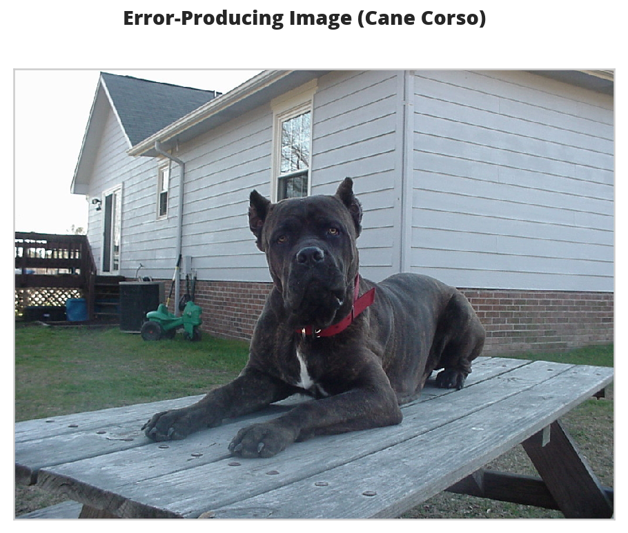
- Why did this raise an error?
I couldn't find anyplace where pytorch documents it, but if you look at the source code you can see that they are expecting an image size of 299 pixels, so we need a diferent transform from that used by the VGG model.
INCEPTION_IMAGE_SIZE = 299 inception_transforms = transforms.Compose([ transforms.Resize(INCEPTION_IMAGE_SIZE), transforms.CenterCrop(INCEPTION_IMAGE_SIZE), transforms.ToTensor(), transforms.Normalize(MEANS, DEVIATIONS)])Now try it again with the new transforms.
def inception_predicts_two(image_path: str) -> int: """Predicts the category of the image Args: image_path: path to the image file Returns: classification: the resnet ID for the image """ image = Image.open(str(image_path)) image = inception_transforms(image).unsqueeze(0).to(device) output = inception(image) probabilities = torch.exp(output) top_probability, top_class = probabilities.topk(1, dim=1) return top_class.item()Does this fix it?
The Score
inception_predictor = partial(dog_detector, predictor=inception_predicts_two)
inception_scorer = dog_scorer(inception_predictor)
inception_scorer()
| Metric | Value |
|---|---|
| Accuracy | 0.95 |
| Precision | 0.99 |
| Recall | 0.91 |
| Specificity | 0.99 |
| F1 | 0.95 |
| Elapsed | 0:03:00.836240 |
The inception had a little more false positives but also more true positives so in the end it came up about the same on the F1 score as the VGG 16 model. They both took about the same amount of time.
inception_human_dog = first_prediction(inception_scorer.false_image_predictions)
34: True
figure, axe = pyplot.subplots()
source = human_files_short[inception_human_dog]
name = " ".join(
os.path.splitext(
os.path.basename(source))[0].split("_")[:-1]).title()
figure.suptitle("Human-Dog Inception Prediction ({})".format(
name), weight="bold")
image = Image.open(source)
image = axe.imshow(image)
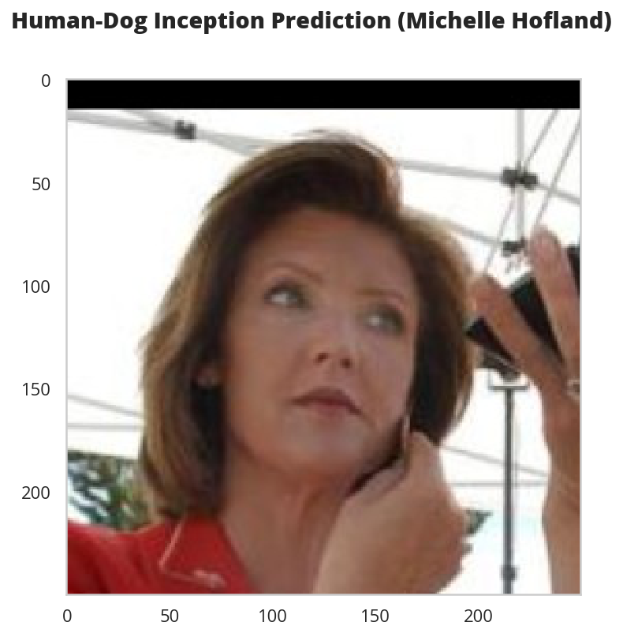
Combine The Detectors
Since jupyter (or org-babel) lets you run cells out of sequence I've spent too much time chasing bugs that weren't really bugs, I just hadn't run the right cell. To try and ameliorate that I'm going to use class-based code for the actual implementations.
The Dog Detector
The Dog Detector builds the parts of the deep learning model that are needed to check if there are dogs in the image.
class DogDetector:
"""Detects dogs
Args:
model_definition: definition for the model
device: where to run the model (CPU or CUDA)
image_size: what to resize the file to (depends on the model-definition)
means: mean for each channel
deviations: standard deviation for each channel
dog_lower_bound: index below where dogs start
dog_upper_bound: index above where dogs end
"""
def __init__(self,
model_definition: nn.Module=models.inception_v3,
image_size: int=INCEPTION_IMAGE_SIZE,
means: list=MEANS,
deviations = DEVIATIONS,
dog_lower_bound: int=DOG_LOWER,
dog_upper_bound: int=DOG_UPPER,
device: torch.device=None) -> None:
self.model_definition = model_definition
self.image_size = image_size
self.means = means
self.deviations = deviations
self.dog_lower_bound = dog_lower_bound
self.dog_upper_bound = dog_upper_bound
self._device = device
self._model = None
self._transform = None
return
@property
def device(self) -> torch.device:
"""The device to add the model to"""
if self._device is None:
self._device = torch.device("cuda"
if torch.cuda.is_available()
else "cpu")
return self._device
@property
def model(self) -> nn.Module:
"""Build the model"""
if self._model is None:
self._model = self.model_definition(pretrained=True)
self._model.to(self.device)
self._model.eval()
return self._model
@property
def transform(self) -> transforms.Compose:
"""The transformer for the image data"""
if self._transform is None:
self._transform = transforms.Compose([
transforms.Resize(self.image_size),
transforms.CenterCrop(self.image_size),
transforms.ToTensor(),
transforms.Normalize(self.means,
self.deviations)])
return self._transform
def __call__(self, image_path: str) -> bool:
"""Checks if there is a dog in the image"""
image = Image.open(str(image_path))
image = self.transform(image).unsqueeze(0).to(self.device)
output = self.model(image)
probabilities = torch.exp(output)
_, top_class = probabilities.topk(1, dim=1)
return self.dog_lower_bound < top_class.item() < self.dog_upper_bound
The Species Detector
The Species Detector holds the human and dog detectors.
class SpeciesDetector:
"""Detect dogs and humans
Args:
device: where to put the dog-detecting model
"""
def __init__(self, device: torch.device=None) -> None:
self.device = device
self._dog_detector = None
return
@property
def dog_detector(self) -> DogDetector:
"""Neural Network dog-detector"""
if self._dog_detector is None:
self._dog_detector = DogDetector(device=self.device)
return self._dog_detector
def is_human(self, image_path: str) -> bool:
"""Checks if the image is a human
Args:
image_path: path to the image
Returns:
True if there is a human face in the image
"""
image = face_recognition.load_image_file(str(image_path))
faces = face_recognition.face_locations(image)
return len(faces) > 0
def is_dog(self, image_path: str) -> bool:
"""Checks if there is a dog in the image"""
return self.dog_detector(image_path)
A Dog Breed Classifier
Although the Inception model does do some classification of dogs, we want an even more fine-tuned model. First I'm going to try to build a naive CNN from scratch, then I'm going to use the Inception model and transfer learning to build a better classifier.
A Naive Model
The Data Transformers
For the naive model I'm going to use the image-size the VGG model uses (the original VGG paper describes the input as being 224 x 224). No particular reason except I've worked with that size before so I think it might make troubleshooting a little easier. The Resize transform scales the image so that the smaller edge matches the size we give it. I found out the hard way that not all the input images are square so we need to then crop them back to the right size after scaling.
Here's the training tranforms:
For testing and using:
For both:
IMAGE_SIZE = 224
IMAGE_HALF_SIZE = IMAGE_SIZE//2
train_transform = transforms.Compose([
transforms.RandomRotation(30),
transforms.RandomResizedCrop(IMAGE_SIZE),
transforms.RandomHorizontalFlip(),
transforms.ToTensor(),
transforms.Normalize(MEANS,
DEVIATIONS)])
test_transform = transforms.Compose([transforms.Resize(255),
transforms.CenterCrop(IMAGE_SIZE),
transforms.ToTensor(),
transforms.Normalize(MEANS,
DEVIATIONS)])
Load the Data
training = datasets.ImageFolder(root=str(dog_paths.training.folder),
transform=train_transform)
validation = datasets.ImageFolder(root=str(dog_paths.validation.folder),
transform=test_transform)
testing = datasets.ImageFolder(root=str(dog_paths.testing.folder),
transform=test_transform)
Build the Batch Loaders
BATCH_SIZE = 35
WORKERS = 0
train_batches = torch.utils.data.DataLoader(training, batch_size=BATCH_SIZE,
shuffle=True, num_workers=WORKERS)
validation_batches = torch.utils.data.DataLoader(
validation, batch_size=BATCH_SIZE, shuffle=True, num_workers=WORKERS)
test_batches = torch.utils.data.DataLoader(
testing, batch_size=BATCH_SIZE, shuffle=True, num_workers=WORKERS)
loaders_scratch = dict(train=train_batches,
validate=validation_batches,
test=test_batches)
The Network
This is only going to be a three-layer model. I started out trying to make a really big one but between the computation time and running out of memory I decided to limit the scope since the transfer model is the real one I want anyway, this is just for practice. The first block defines the parameters for the network.
LAYER_ONE_OUT = 16
LAYER_TWO_OUT = LAYER_ONE_OUT * 2
LAYER_THREE_OUT = LAYER_TWO_OUT * 2
KERNEL = 3
PADDING = 1
FULLY_CONNECTED_OUT = 500
This next block does one pass through what the network is going to be doing so I can make sure the inputs and outputs are the correct size.
conv_1 = nn.Conv2d(3, LAYER_ONE_OUT, KERNEL, padding=PADDING)
conv_2 = nn.Conv2d(LAYER_ONE_OUT, LAYER_TWO_OUT, KERNEL, padding=PADDING)
conv_3 = nn.Conv2d(LAYER_TWO_OUT, LAYER_THREE_OUT, KERNEL, padding=PADDING)
pool = nn.MaxPool2d(2, 2)
dropout = nn.Dropout(0.25)
fully_connected_1 = nn.Linear((IMAGE_HALF_SIZE//4)**2 * LAYER_THREE_OUT, FULLY_CONNECTED_OUT)
fully_connected_2 = nn.Linear(FULLY_CONNECTED_OUT, dog_paths.breed_count)
dataiter = iter(loaders_scratch['train'])
images, labels = dataiter.next()
x = pool(F.relu(conv_1(images)))
print(x.shape)
assert x.shape == torch.Size([BATCH_SIZE, 16, IMAGE_HALF_SIZE, IMAGE_HALF_SIZE])
x = pool(F.relu(conv_2(x)))
print(x.shape)
assert x.shape == torch.Size([BATCH_SIZE, LAYER_TWO_OUT, IMAGE_HALF_SIZE//2, IMAGE_HALF_SIZE//2])
x = pool(F.relu(conv_3(x)))
print(x.shape)
assert x.shape == torch.Size([BATCH_SIZE, LAYER_THREE_OUT, IMAGE_HALF_SIZE//4, IMAGE_HALF_SIZE//4])
x = x.view(-1, ((IMAGE_HALF_SIZE//4)**2) * LAYER_THREE_OUT)
print(x.shape)
x = fully_connected_1(x)
print(x.shape)
x = fully_connected_2(x)
print(x.shape)
torch.Size([10, 16, 112, 112]) torch.Size([10, 32, 56, 56]) torch.Size([10, 64, 28, 28]) torch.Size([10, 50176]) torch.Size([10, 500]) torch.Size([10, 133])
The Class
This is the actual implementation based on the previous code.
class NaiveNet(nn.Module):
"""Naive Neural Network to classify dog breeds"""
def __init__(self) -> None:
super().__init__()
self.conv1 = nn.Conv2d(3, LAYER_ONE_OUT,
KERNEL, padding=PADDING)
self.conv2 = nn.Conv2d(LAYER_ONE_OUT, LAYER_TWO_OUT,
KERNEL, padding=PADDING)
self.conv3 = nn.Conv2d(LAYER_TWO_OUT, LAYER_THREE_OUT,
KERNEL, padding=PADDING)
# max pooling layer
self.pool = nn.MaxPool2d(2, 2)
# linear layer
self.fc1 = nn.Linear((IMAGE_HALF_SIZE//4)**2 * LAYER_THREE_OUT, FULLY_CONNECTED_OUT)
self.fc2 = nn.Linear(FULLY_CONNECTED_OUT, BREEDS)
# dropout layer (p=0.25)
self.dropout = nn.Dropout(0.25)
return
def forward(self, x: torch.Tensor) -> torch.Tensor:
"""The forward pass method
Args:
x: a n x 224 x 224 x 3 tensor
Returns:
tensor of probabilities
"""
x = self.pool(F.relu(self.conv1(x)))
x = self.pool(F.relu(self.conv2(x)))
x = self.pool(F.relu(self.conv3(x)))
x = x.view(-1, (IMAGE_HALF_SIZE//4)**2 * LAYER_THREE_OUT)
x = self.dropout(x)
x = self.dropout(F.relu(self.fc1(x)))
x = self.fc2(x)
return x
naive_model = NaiveNet()
naive_model.to(device)
MODELS.append(naive_model)
The Loss Function and Optimizer
For loss measurement I'm going to use Cross Entropy Loss and Stochastic Gradient Descent for backward propagation.
criterion_scratch = nn.CrossEntropyLoss()
optimizer_scratch = optimizer.SGD(naive_model.parameters(),
lr=0.001,
momentum=0.9)
Train and Validate the Model
- The Trainer
Another class to try and get everything bundled into one place.
class Trainer: """Trains, validates, and tests the model Args: training_batches: batch-loaders for training validation_batches: batch-loaders for validation testing_batches: batch-loaders for testing model: the network to train model_path: where to save the best model optimizer: the gradient descent object criterion: object to do backwards propagation device: where to put the data (cuda or cpu) epochs: number of times to train on the data set epoch_start: number to start the epoch count with load_model: whether to load the model from a file beep: whether timer should emit sounds is_inception: expecte two outputs in training """ def __init__(self, training_batches: torch.utils.data.DataLoader, validation_batches: torch.utils.data.DataLoader, testing_batches: torch.utils.data.DataLoader, model: nn.Module, model_path: Path, optimizer: optimizer.SGD, criterion: nn.CrossEntropyLoss, device: torch.device=None, epochs: int=10, epoch_start: int=1, is_inception: bool=False, load_model: bool=False, beep: bool=False) -> None: self.training_batches = training_batches self.validation_batches = validation_batches self.testing_batches = testing_batches self.model = model self.model_path = model_path self.optimizer = optimizer self.criterion = criterion self.epochs = epochs self.is_inception = is_inception self.beep = beep self._epoch_start = None self.epoch_start = epoch_start self.load_model = load_model self._timer = None self._epoch_end = None self._device = device return @property def epoch_start(self) -> int: """The number to start the epoch count""" return self._epoch_start @epoch_start.setter def epoch_start(self, new_start: int) -> None: """Sets the epoch start, removes the epoch end""" self._epoch_start = new_start self._epoch_end = None return @property def device(self) -> torch.device: """The device to put the data on""" if self._device is None: self._device = torch.device("cuda" if torch.cuda.is_available() else "cpu") return self._device @property def epoch_end(self) -> int: """the end of the epochs (not inclusive)""" if self._epoch_end is None: self._epoch_end = self.epoch_start + self.epochs return self._epoch_end @property def timer(self) -> Timer: """something to emit times""" if self._timer is None: self._timer = Timer(beep=self.beep) return self._timer def forward(self, batches: torch.utils.data.DataLoader, training: bool) -> tuple: """runs the forward pass Args: batches: data-loader training: if true, runs the training, otherwise validates Returns: tuple: loss, correct, total """ forward_loss = 0 correct = 0 if training: self.model.train() else: self.model.eval() for data, target in batches: data, target = data.to(self.device), target.to(self.device) if training: self.optimizer.zero_grad() if training and self.is_inception: # throw away the auxiliary output output, _ = self.model(data) output = self.model(data) loss = self.criterion(output, target) if training: loss.backward() self.optimizer.step() forward_loss += loss.item() * data.size(0) predictions = output.data.max(1, keepdim=True)[1] correct += numpy.sum( numpy.squeeze( predictions.eq( target.data.view_as(predictions))).cpu().numpy()) forward_loss /= len(batches.dataset) return forward_loss, correct, len(batches.dataset) def train(self) -> tuple: """Runs the training Returns: training loss, correct, count """ return self.forward(batches=self.training_batches, training=True) def validate(self) -> tuple: """Runs the validation Returns: validation loss, correct, count """ return self.forward(batches=self.validation_batches, training=False) def test(self) -> None: """Runs the testing """ self.timer.start() self.model.load_state_dict(torch.load(self.model_path)) loss, correct, total = self.forward(batches=self.testing_batches, training=False) print("Test Loss: {:.3f}".format(loss)) print("Test Accuracy: {:.2f} ({}/{})".format(100 * correct/total, correct, total)) self.timer.end() return def train_and_validate(self): """Trains and Validates the model """ validation_loss_min = numpy.Inf for epoch in range(self.epoch_start, self.epoch_end): self.timer.start() training_loss, training_correct, training_count = self.train() (validation_loss, validation_correct, validation_count) = self.validate() self.timer.end() print(("Epoch: {}\t" "Training - Loss: {:.2f}\t" "Accuracy: {:.2f}\t" "Validation - Loss: {:.2f}\t" "Accuracy: {:.2f}").format( epoch, training_loss, training_correct/training_count, validation_loss, validation_correct/validation_count, )) if validation_loss < validation_loss_min: print( ("Validation loss decreased ({:.6f} --> {:.6f}). " "Saving model ...").format( validation_loss_min, validation_loss)) torch.save(self.model.state_dict(), self.model_path) validation_loss_min = validation_loss return def __call__(self) -> None: """Trains, Validates, and Tests the model""" if self.load_model and self.model_path.is_file(): self.model.load_state_dict(torch.load(self.model_path)) print("Starting Training") self.timer.start() self.train_and_validate() self.timer.end() print("\nStarting Testing") self.test() return
Broken Images
I noted at the beginning of the notebook that at least one of the images is raising an OSError:
OSError: image file is truncated (150 bytes not processed)
This is the part of the notebook where I originally found out what was going on (because it kept crashing during training).
timer.start()
broken = None
for image in dog_files:
try:
opened = Image.open(image)
opened.convert("RGB")
except OSError as error:
print("{}: {}".format(error, image))
broken = image
timer.end()
image file is truncated (150 bytes not processed): /home/hades/datasets/dog-breed-classification/dogImages/train/098.Leonberger/Leonberger_06571.jpg Ended: 2018-12-30 15:10:19.141003 Elapsed: 0:02:29.804925
figure, axe = pyplot.subplots()
name = " ".join(broken.name.split("_")[:-1]).title()
figure.suptitle("Truncated Image ({})".format(name), weight="bold")
image = Image.open(broken)
axe_image = axe.imshow(image)
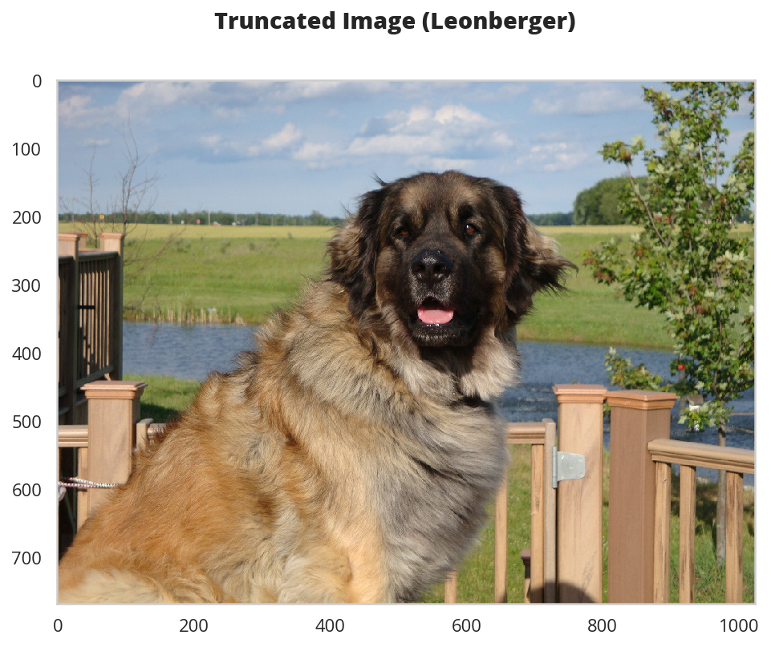
I got the solution from this Stack Overflow post, I don't know why but the image seems to be missing some pixels or something. Oh, well. The key to making it work:
ImageFile.LOAD_TRUNCATED_IMAGES = True
Train the Model
NAIVE_PATH = MODEL_PATH.folder.joinpath("model_scratch.pt")
scratch_log = Tee(log_name="scratch_train.log")
Test the Model
def test(test_batches: torch.utils.data.DataLoader,
model: nn.Module,
criterion: nn.CrossEntropyLoss) -> None:
"""Test the model
Args:
test_batches: batch loader of test images
model: the network to test
criterion: calculator for the loss
"""
test_loss = 0.
correct = 0.
total = 0.
model.eval()
for data, target in test_batches:
data, target = data.to(device), target.to(device)
output = model(data)
loss = criterion(output, target)
test_loss += loss.item() * data.size(0)
# convert output probabilities to predicted class
predictions = output.data.max(1, keepdim=True)[1]
# compare predictions to true label
correct += numpy.sum(
numpy.squeeze(
predictions.eq(
target.data.view_as(predictions))).cpu().numpy())
total += data.size(0)
test_loss /= len(test_batches.dataset)
print('Test Loss: {:.6f}\n'.format(test_loss))
print('\nTest Accuracy: %2d%% (%2d/%2d)' % (
100. * correct / total, correct, total))
return
Train and Test
def train_and_test(train_batches: torch.utils.data.DataLoader,
validate_batches: torch.utils.data.DataLoader,
test_batches: torch.utils.data.DataLoader,
model: nn.Module,
model_path: Path,
optimizer: optimizer.SGD,
criterion: nn.CrossEntropyLoss,
epochs: int=10,
epoch_start: int=1,
load_model: bool=False) -> None:
"""Trains and Tests the Model
Args:
train_batches: batch-loaders for training
validate_batches: batch-loaders for validation
test_batches: batch-loaders for testing
model: the network to train
model_path: where to save the best model
optimizer: the gradient descent object
criterion: object to do backwards propagation
epochs: number of times to train on the data set
epoch_start: number to start the epoch count with
load_model: whether to load the model from a file
"""
if load_model and model_path.is_file():
model.load_state_dict(torch.load(model_path))
print("Starting Training")
timer.start()
model_scratch = train(epochs=epochs,
epoch_start=epoch_start,
train_batches=train_batches,
validation_batches=validate_batches,
model=model,
optimizer=optimizer,
criterion=criterion,
save_path=model_path)
timer.end()
# load the best model
model.load_state_dict(torch.load(model_path))
print("Starting Testing")
timer.start()
test(test_batches, model, criterion)
timer.end()
return
Train the Model
When I originally wrote this I was using this functional-style of training and testing, which was hard to use, but since it's so expensive to train the model (in terms of time, and to some degree server cost) I'm not going to re-do it so the code here looks a little different from the one I used for the transfer model.
model_path = DataPathTwo(
folder_key="MODELS",
filename="model_scratch.pt")
assert model_path.folder.is_dir()
train_and_test(epochs=10,
train_batches=loaders_scratch["train"],
validate_batches=loaders_scratch["validate"],
test_batches=loaders_scratch["test"],
model=model_scratch,
optimizer=optimizer_scratch,
criterion=criterion_scratch,
epoch_start=0,
model_path=model_path.from_folder,
load_model=False)
next_start = 11
Starting Training Ended: 2019-01-01 16:35:14.192989 Elapsed: 0:03:23.778459 Epoch: 0 Training Loss: 3.946975 Validation Loss: 3.758706 Validation loss decreased (inf --> 3.758706). Saving model ... Ended: 2019-01-01 16:38:39.497147 Elapsed: 0:03:24.517456 Epoch: 1 Training Loss: 3.880984 Validation Loss: 3.695643 Validation loss decreased (3.758706 --> 3.695643). Saving model ... Ended: 2019-01-01 16:42:04.190248 Elapsed: 0:03:23.903292 Epoch: 2 Training Loss: 3.870710 Validation Loss: 3.718353 Ended: 2019-01-01 16:45:28.479552 Elapsed: 0:03:23.718292 Epoch: 3 Training Loss: 3.836664 Validation Loss: 3.740289 Ended: 2019-01-01 16:48:53.605419 Elapsed: 0:03:24.555708 Epoch: 4 Training Loss: 3.819701 Validation Loss: 3.659244 Validation loss decreased (3.695643 --> 3.659244). Saving model ... Ended: 2019-01-01 16:52:33.198097 Elapsed: 0:03:38.805586 Epoch: 5 Training Loss: 3.778872 Validation Loss: 3.756706 Ended: 2019-01-01 16:56:16.822584 Elapsed: 0:03:43.055469 Epoch: 6 Training Loss: 3.752981 Validation Loss: 3.679196 Ended: 2019-01-01 16:59:42.861936 Elapsed: 0:03:25.469331 Epoch: 7 Training Loss: 3.730930 Validation Loss: 3.608311 Validation loss decreased (3.659244 --> 3.608311). Saving model ... Ended: 2019-01-01 17:03:10.958002 Elapsed: 0:03:27.305644 Epoch: 8 Training Loss: 3.705110 Validation Loss: 3.636201 Ended: 2019-01-01 17:06:38.939991 Elapsed: 0:03:27.412824 Epoch: 9 Training Loss: 3.665519 Validation Loss: 3.595410 Validation loss decreased (3.608311 --> 3.595410). Saving model ... Ended: 2019-01-01 17:06:39.733176 Elapsed: 0:03:28.206009 Starting Testing Test Loss: 3.642843 Test Accuracy: 14% (125/836) Ended: 2019-01-01 17:07:11.142926 Elapsed: 0:00:30.815650
Hmm, seems suspiciously good all of a sudden. It looks like my GPU is faster than paper space's, too..
train_and_test(epochs=10,
train_batches=loaders_scratch["train"],
validate_batches=loaders_scratch["validate"],
test_batches=loaders_scratch["test"],
model=model_scratch,
optimizer=optimizer_scratch,
criterion=criterion_scratch,
epoch_start=next_start,
model_path=model_path.from_folder,
load_model=True)
next_start = 21
Starting Training Ended: 2019-01-01 17:29:46.425198 Elapsed: 0:03:40.954699 Epoch: 0 Training Loss: 3.662736 Validation Loss: 3.631118 Validation loss decreased (inf --> 3.631118). Saving model ... Ended: 2019-01-01 17:33:12.797754 Elapsed: 0:03:25.528229 Epoch: 1 Training Loss: 3.612436 Validation Loss: 3.610919 Validation loss decreased (3.631118 --> 3.610919). Saving model ... Ended: 2019-01-01 17:36:49.466848 Elapsed: 0:03:35.831733 Epoch: 2 Training Loss: 3.612902 Validation Loss: 3.590953 Validation loss decreased (3.610919 --> 3.590953). Saving model ... Ended: 2019-01-01 17:40:17.511898 Elapsed: 0:03:27.192943 Epoch: 3 Training Loss: 3.564542 Validation Loss: 3.566365 Validation loss decreased (3.590953 --> 3.566365). Saving model ... Ended: 2019-01-01 17:43:45.639219 Elapsed: 0:03:27.309572 Epoch: 4 Training Loss: 3.551703 Validation Loss: 3.608934 Ended: 2019-01-01 17:47:32.854824 Elapsed: 0:03:46.646159 Epoch: 5 Training Loss: 3.542706 Validation Loss: 3.533696 Validation loss decreased (3.566365 --> 3.533696). Saving model ... Ended: 2019-01-01 17:51:02.330525 Elapsed: 0:03:28.506819 Epoch: 6 Training Loss: 3.532894 Validation Loss: 3.531388 Validation loss decreased (3.533696 --> 3.531388). Saving model ... Ended: 2019-01-01 17:54:25.844725 Elapsed: 0:03:22.697779 Epoch: 7 Training Loss: 3.482241 Validation Loss: 3.564429 Ended: 2019-01-01 17:57:48.563069 Elapsed: 0:03:22.148237 Epoch: 8 Training Loss: 3.485189 Validation Loss: 3.624133 Ended: 2019-01-01 18:01:11.755236 Elapsed: 0:03:22.621310 Epoch: 9 Training Loss: 3.461059 Validation Loss: 3.594314 Ended: 2019-01-01 18:01:12.326268 Elapsed: 0:03:23.192342 Starting Testing Test Loss: 3.537503 Test Accuracy: 16% (138/836) Ended: 2019-01-01 18:01:42.764907 Elapsed: 0:00:29.747148
train_and_test(epochs=10,
train_batches=loaders_scratch["train"],
validate_batches=loaders_scratch["validate"],
test_batches=loaders_scratch["test"],
model=model_scratch,
optimizer=optimizer_scratch,
criterion=criterion_scratch,
epoch_start=next_start,
model_path=model_path.from_folder,
load_model=True)
next_start = 31
Starting Training Ended: 2019-01-01 18:45:17.404562 Elapsed: 0:03:23.081286 Epoch: 21 Training Loss: 3.510303 Validation Loss: 3.555182 Validation loss decreased (inf --> 3.555182). Saving model ... Ended: 2019-01-01 18:48:41.215171 Elapsed: 0:03:22.949288 Epoch: 22 Training Loss: 3.485824 Validation Loss: 3.570289 Ended: 2019-01-01 18:52:04.635395 Elapsed: 0:03:22.849569 Epoch: 23 Training Loss: 3.438656 Validation Loss: 3.543221 Validation loss decreased (3.555182 --> 3.543221). Saving model ... Ended: 2019-01-01 18:55:28.409018 Elapsed: 0:03:22.980693 Epoch: 24 Training Loss: 3.387092 Validation Loss: 3.649569 Ended: 2019-01-01 18:58:51.555922 Elapsed: 0:03:22.576946 Epoch: 25 Training Loss: 3.381217 Validation Loss: 3.529994 Validation loss decreased (3.543221 --> 3.529994). Saving model ... Ended: 2019-01-01 19:02:15.743200 Elapsed: 0:03:23.359857 Epoch: 26 Training Loss: 3.379801 Validation Loss: 3.514583 Validation loss decreased (3.529994 --> 3.514583). Saving model ... Ended: 2019-01-01 19:05:40.243125 Elapsed: 0:03:23.700481 Epoch: 27 Training Loss: 3.334058 Validation Loss: 3.469988 Validation loss decreased (3.514583 --> 3.469988). Saving model ... Ended: 2019-01-01 19:09:04.218270 Elapsed: 0:03:23.150903 Epoch: 28 Training Loss: 3.347201 Validation Loss: 3.456167 Validation loss decreased (3.469988 --> 3.456167). Saving model ... Ended: 2019-01-01 19:12:27.711756 Elapsed: 0:03:22.677622 Epoch: 29 Training Loss: 3.320286 Validation Loss: 3.444669 Validation loss decreased (3.456167 --> 3.444669). Saving model ... Ended: 2019-01-01 19:15:51.375887 Elapsed: 0:03:22.875358 Epoch: 30 Training Loss: 3.314001 Validation Loss: 3.460704 Ended: 2019-01-01 19:15:51.946497 Elapsed: 0:03:23.445968 Starting Testing Test Loss: 3.492875 Test Accuracy: 17% (146/836) Ended: 2019-01-01 19:16:10.729405 Elapsed: 0:00:18.109680
train_and_test(epochs=10,
train_batches=loaders_scratch["train"],
validate_batches=loaders_scratch["validate"],
test_batches=loaders_scratch["test"],
model=model_scratch,
optimizer=optimizer_scratch,
criterion=criterion_scratch,
epoch_start=next_start,
model_path=model_path.from_folder,
load_model=True)
next_start = 41
Starting Training Ended: 2019-01-01 20:15:25.906348 Elapsed: 0:05:12.167322 Epoch: 31 Training Loss: 3.311046 Validation Loss: 3.446478 Validation loss decreased (inf --> 3.446478). Saving model ... Ended: 2019-01-01 20:19:13.168084 Elapsed: 0:03:46.461085 Epoch: 32 Training Loss: 3.270769 Validation Loss: 3.550049 Ended: 2019-01-01 20:22:38.973465 Elapsed: 0:03:25.195274 Epoch: 33 Training Loss: 3.221883 Validation Loss: 3.489280 Ended: 2019-01-01 20:26:02.049299 Elapsed: 0:03:22.483931 Epoch: 34 Training Loss: 3.271723 Validation Loss: 3.507546 Ended: 2019-01-01 20:29:24.932614 Elapsed: 0:03:22.292605 Epoch: 35 Training Loss: 3.197156 Validation Loss: 3.475409 Ended: 2019-01-01 20:32:47.569786 Elapsed: 0:03:22.046763 Epoch: 36 Training Loss: 3.210177 Validation Loss: 3.477707 Ended: 2019-01-01 20:36:09.752175 Elapsed: 0:03:21.592504 Epoch: 37 Training Loss: 3.199346 Validation Loss: 3.577469 Ended: 2019-01-01 20:39:32.831340 Elapsed: 0:03:22.489048 Epoch: 38 Training Loss: 3.158563 Validation Loss: 3.442629 Validation loss decreased (3.446478 --> 3.442629). Saving model ... Ended: 2019-01-01 20:42:56.293868 Elapsed: 0:03:22.664005 Epoch: 39 Training Loss: 3.152231 Validation Loss: 3.470943 Ended: 2019-01-01 20:46:18.983529 Elapsed: 0:03:22.098438 Epoch: 40 Training Loss: 3.124298 Validation Loss: 3.429367 Validation loss decreased (3.442629 --> 3.429367). Saving model ... Ended: 2019-01-01 20:46:19.801009 Elapsed: 0:03:22.915918 Starting Testing Test Loss: 3.348011 Test Accuracy: 21% (179/836) Ended: 2019-01-01 20:46:42.494502 Elapsed: 0:00:22.094465
train_and_test(epochs=10,
train_batches=loaders_scratch["train"],
validate_batches=loaders_scratch["validate"],
test_batches=loaders_scratch["test"],
model=model_scratch,
optimizer=optimizer_scratch,
criterion=criterion_scratch,
epoch_start=next_start,
model_path=model_path.from_folder,
load_model=True)
next_start = 51
Starting Training Ended: 2019-01-01 22:01:17.285699 Elapsed: 0:03:24.381614 Epoch: 41 Training Loss: 3.095166 Validation Loss: 3.418227 Validation loss decreased (inf --> 3.418227). Saving model ... Ended: 2019-01-01 22:04:43.173252 Elapsed: 0:03:25.033381 Epoch: 42 Training Loss: 3.089258 Validation Loss: 3.419117 Ended: 2019-01-01 22:08:07.709900 Elapsed: 0:03:23.945667 Epoch: 43 Training Loss: 3.071535 Validation Loss: 3.433646 Ended: 2019-01-01 22:11:33.153513 Elapsed: 0:03:24.853880 Epoch: 44 Training Loss: 3.058665 Validation Loss: 3.454817 Ended: 2019-01-01 22:14:59.899762 Elapsed: 0:03:26.156530 Epoch: 45 Training Loss: 3.072674 Validation Loss: 3.494963 Ended: 2019-01-01 22:18:26.207188 Elapsed: 0:03:25.746042 Epoch: 46 Training Loss: 3.043788 Validation Loss: 3.430311 Ended: 2019-01-01 22:21:51.975083 Elapsed: 0:03:25.177310 Epoch: 47 Training Loss: 3.015571 Validation Loss: 3.382248 Validation loss decreased (3.418227 --> 3.382248). Saving model ... Ended: 2019-01-01 22:25:18.237087 Elapsed: 0:03:25.403639 Epoch: 48 Training Loss: 2.972451 Validation Loss: 3.449296 Ended: 2019-01-01 22:28:44.315967 Elapsed: 0:03:25.498810 Epoch: 49 Training Loss: 2.989183 Validation Loss: 3.428347 Ended: 2019-01-01 22:32:10.738134 Elapsed: 0:03:25.832058 Epoch: 50 Training Loss: 2.966034 Validation Loss: 3.501775 Ended: 2019-01-01 22:32:11.326703 Elapsed: 0:03:26.420627 Starting Testing Test Loss: 3.485910 Test Accuracy: 18% (156/836) Ended: 2019-01-01 22:32:41.884173 Elapsed: 0:00:29.644028
train_and_test(epochs=10,
train_batches=loaders_scratch["train"],
validate_batches=loaders_scratch["validate"],
test_batches=loaders_scratch["test"],
model=model_scratch,
optimizer=optimizer_scratch,
criterion=criterion_scratch,
epoch_start=next_start,
model_path=model_path.from_folder,
load_model=True)
next_start = 61
Starting Training Ended: 2019-01-01 22:39:53.821378 Elapsed: 0:04:15.535643 Epoch: 51 Training Loss: 3.024161 Validation Loss: 3.409968 Validation loss decreased (inf --> 3.409968). Saving model ... Ended: 2019-01-01 22:43:47.462698 Elapsed: 0:03:52.776151 Epoch: 52 Training Loss: 2.979377 Validation Loss: 3.512004 Ended: 2019-01-01 22:47:35.580770 Elapsed: 0:03:47.528679 Epoch: 53 Training Loss: 2.983352 Validation Loss: 3.499196 Ended: 2019-01-01 22:50:58.662565 Elapsed: 0:03:22.501398 Epoch: 54 Training Loss: 2.944738 Validation Loss: 3.458440 Ended: 2019-01-01 22:54:21.531858 Elapsed: 0:03:22.279749 Epoch: 55 Training Loss: 2.921185 Validation Loss: 3.581930 Ended: 2019-01-01 22:57:44.017339 Elapsed: 0:03:21.925483 Epoch: 56 Training Loss: 2.928508 Validation Loss: 3.449956 Ended: 2019-01-01 23:01:06.668710 Elapsed: 0:03:22.061753 Epoch: 57 Training Loss: 2.887215 Validation Loss: 3.559204 Ended: 2019-01-01 23:04:29.439919 Elapsed: 0:03:22.181396 Epoch: 58 Training Loss: 2.909253 Validation Loss: 3.458249 Ended: 2019-01-01 23:07:51.804139 Elapsed: 0:03:21.803807 Epoch: 59 Training Loss: 2.864969 Validation Loss: 3.599446 Ended: 2019-01-01 23:11:14.184534 Elapsed: 0:03:21.789954 Epoch: 60 Training Loss: 2.820693 Validation Loss: 3.432991 Ended: 2019-01-01 23:11:14.775507 Elapsed: 0:03:22.380927 Starting Testing Test Loss: 3.370016 Test Accuracy: 21% (176/836) Ended: 2019-01-01 23:11:44.949942 Elapsed: 0:00:29.259563
next_start = 61
train_and_test(epochs=10,
train_batches=loaders_scratch["train"],
validate_batches=loaders_scratch["validate"],
test_batches=loaders_scratch["test"],
model=model_scratch,
optimizer=optimizer_scratch,
criterion=criterion_scratch,
epoch_start=next_start,
model_path=model_path.from_folder,
load_model=True)
next_start = 71
Starting Training Ended: 2019-01-01 23:31:00.034455 Elapsed: 0:03:21.658811 Epoch: 61 Training Loss: 2.968425 Validation Loss: 3.469985 Validation loss decreased (inf --> 3.469985). Saving model ... Ended: 2019-01-01 23:34:24.012685 Elapsed: 0:03:22.630721 Epoch: 62 Training Loss: 2.980103 Validation Loss: 3.449017 Validation loss decreased (3.469985 --> 3.449017). Saving model ... Ended: 2019-01-01 23:37:47.137370 Elapsed: 0:03:22.315870 Epoch: 63 Training Loss: 2.945722 Validation Loss: 3.497296 Ended: 2019-01-01 23:41:09.932696 Elapsed: 0:03:22.226620 Epoch: 64 Training Loss: 2.940117 Validation Loss: 3.398626 Validation loss decreased (3.449017 --> 3.398626). Saving model ... Ended: 2019-01-01 23:44:33.204607 Elapsed: 0:03:22.484337 Epoch: 65 Training Loss: 2.913762 Validation Loss: 3.465828 Ended: 2019-01-01 23:47:55.682608 Elapsed: 0:03:21.909285 Epoch: 66 Training Loss: 2.877373 Validation Loss: 3.525525 Ended: 2019-01-01 23:51:18.110150 Elapsed: 0:03:21.859021 Epoch: 67 Training Loss: 2.889807 Validation Loss: 3.499459 Ended: 2019-01-01 23:54:40.142934 Elapsed: 0:03:21.464199 Epoch: 68 Training Loss: 2.882748 Validation Loss: 3.364801 Validation loss decreased (3.398626 --> 3.364801). Saving model ... Ended: 2019-01-01 23:58:02.359285 Elapsed: 0:03:21.435096 Epoch: 69 Training Loss: 2.886337 Validation Loss: 3.488435 Ended: 2019-01-02 00:01:26.616419 Elapsed: 0:03:23.688341 Epoch: 70 Training Loss: 2.867836 Validation Loss: 3.417904 Ended: 2019-01-02 00:01:27.309412 Elapsed: 0:03:24.381334 Starting Testing Test Loss: 3.359312 Test Accuracy: 22% (191/836) Ended: 2019-01-02 00:02:29.963462 Elapsed: 0:01:01.964477
train_and_test(epochs=10,
train_batches=loaders_scratch["train"],
validate_batches=loaders_scratch["validate"],
test_batches=loaders_scratch["test"],
model=model_scratch,
optimizer=optimizer_scratch,
criterion=criterion_scratch,
epoch_start=next_start,
model_path=model_path.from_folder,
load_model=True)
next_start = 81
Starting Training Ended: 2019-01-02 00:13:59.560043 Elapsed: 0:09:26.402859 Epoch: 71 Training Loss: 2.847764 Validation Loss: 3.462033 Validation loss decreased (inf --> 3.462033). Saving model ... Ended: 2019-01-02 00:21:40.896206 Elapsed: 0:07:40.511212 Epoch: 72 Training Loss: 2.852644 Validation Loss: 3.469687 Ended: 2019-01-02 00:29:05.309753 Elapsed: 0:07:23.845532 Epoch: 73 Training Loss: 2.840424 Validation Loss: 3.545896 Ended: 2019-01-02 00:33:46.928392 Elapsed: 0:04:41.026761 Epoch: 74 Training Loss: 2.813888 Validation Loss: 3.552435 Ended: 2019-01-02 00:37:18.057707 Elapsed: 0:03:30.560704 Epoch: 75 Training Loss: 2.807452 Validation Loss: 3.491534 Ended: 2019-01-02 00:40:41.064242 Elapsed: 0:03:22.438088 Epoch: 76 Training Loss: 2.802119 Validation Loss: 3.429099 Validation loss decreased (3.462033 --> 3.429099). Saving model ... Ended: 2019-01-02 00:44:04.191818 Elapsed: 0:03:22.138587 Epoch: 77 Training Loss: 2.809226 Validation Loss: 3.482573 Ended: 2019-01-02 00:47:26.187167 Elapsed: 0:03:21.427162 Epoch: 78 Training Loss: 2.767340 Validation Loss: 3.473212 Ended: 2019-01-02 00:50:48.717819 Elapsed: 0:03:21.962244 Epoch: 79 Training Loss: 2.750881 Validation Loss: 3.435359 Ended: 2019-01-02 00:54:11.744891 Elapsed: 0:03:22.458406 Epoch: 80 Training Loss: 2.739076 Validation Loss: 3.466524 Ended: 2019-01-02 00:54:12.313860 Elapsed: 0:03:23.027375 Starting Testing Test Loss: 3.505263 Test Accuracy: 21% (183/836) Ended: 2019-01-02 00:54:42.938753 Elapsed: 0:00:29.924658
Debug the CUDA Error
The previous blocks of code raised an exception when I first ran it.
RuntimeError: cuda runtime error (59) : device-side assert triggered at /pytorch/aten/src/THC/generic/THCTensorMath.cu:26
And points to this line as the point where it crashes.
loss.backward()
Re-running it gives a similar but different error.
RuntimeError: CUDA error: device-side assert triggered
Happening here:
data, target = data.to(device), target.to(device)
According to this bug report on GitHub, there's two things happening. One is that once the exception happens the CUDA session is dead so trying to move the data to CUDA raises an error just because we are trying to use it (and you can't until you restart the python session). In that same thread they note that the original exception indicates something wrong with the classes being output by the network. One error they list is if there's a negative label, another if the label is out of range for the number of categories, but In my case it might be that I was only outputting 10 classes (I copied the CIFAR model), not the 133 you need for the dog-breeds.
Load The Best Model
model_scratch.load_state_dict(torch.load('model_scratch.pt'))
Test It
test(loaders_scratch["test"], model_scratch, criterion_scratch)
Test Loss: 3.492875 Test Accuracy: 17% (146/836)
Transfer Learning Model
Now I'm going to use transfer learning to make a model to classify dog images by breed.
The Data Transformer
As I noted earlier, the Inception V3 model expects a different image size so we can't re-use the previous data-transforms.
class Transformer:
"""builds the data-sets
Args:
means: list of means for each channel
deviations: list of standard deviations for each channel
image_size: size to crop the image to
"""
def __init__(self,
means: list=[0.485, 0.456, 0.406],
deviations: list=[0.229, 0.224, 0.225],
image_size: int=299) -> None:
self.means = means
self.deviations = deviations
self.image_size = image_size
self._training = None
self._testing = None
return
@property
def training(self) -> transforms.Compose:
"""The image transformers for the training"""
if self._training is None:
self._training = transforms.Compose([
transforms.RandomRotation(30),
transforms.RandomResizedCrop(self.image_size),
transforms.RandomHorizontalFlip(),
transforms.ToTensor(),
transforms.Normalize(self.means,
self.deviations)])
return self._training
@property
def testing(self) -> transforms.Compose:
"""Image transforms for the testing"""
if self._testing is None:
self._testing = transforms.Compose(
[transforms.Resize(350),
transforms.CenterCrop(self.image_size),
transforms.ToTensor(),
transforms.Normalize(self.means,
self.deviations)])
return self._testing
The Data Set Loader
class DataSets:
"""Builds the data-sets
Args:
paths: object with the paths to the data-sets
"""
def __init__(self, paths: DogPaths=None, transformer: Transformer=None) -> None:
self._paths = paths
self._transformer = transformer
self._training = None
self._validation = None
self._testing = None
return
@property
def paths(self) -> DogPaths:
"""Object with the paths to the image files"""
if self._paths is None:
self._paths = DogPaths()
return self._paths
@property
def transformer(self) -> Transformer:
"""Object with the image transforms"""
if self._transformer is None:
self._transformer = Transformer()
return self._transformer
@property
def training(self) -> datasets.ImageFolder:
"""The training data set"""
if self._training is None:
self._training = datasets.ImageFolder(
root=self.paths.training.folder,
transform=self.transformer.training)
return self._training
@property
def validation(self) -> datasets.ImageFolder:
"""The validation dataset"""
if self._validation is None:
self._validation = datasets.ImageFolder(
root=self.paths.validation.folder,
transform=self.transformer.testing)
return self._validation
@property
def testing(self) -> datasets.ImageFolder:
"""The test set"""
if self._testing is None:
self._testing = datasets.ImageFolder(
root=self.paths.testing.folder,
transform=self.transformer.testing)
return self._testing
The Batch Loader
class Batches:
"""The data batch loaders
Args:
datasets: a data-set builder
batch_size: the size of each batch loaded
workers: the number of processes to use
"""
def __init__(self, datasets: DataSets,
batch_size: int=20,
workers: int=0) -> None:
self.datasets = datasets
self.batch_size = batch_size
self.workers = workers
self._training = None
self._validation = None
self._testing = None
return
@property
def training(self) -> torch.utils.data.DataLoader:
"""The training batches"""
if self._training is None:
self._training = torch.utils.data.DataLoader(
self.datasets.training,
batch_size=self.batch_size,
shuffle=True, num_workers=self.workers)
return self._training
@property
def validation(self) -> torch.utils.data.DataLoader:
"""The validation batches"""
if self._validation is None:
self._validation = torch.utils.data.DataLoader(
self.datasets.validation,
batch_size=self.batch_size,
shuffle=True, num_workers=self.workers)
return self._validation
@property
def testing(self) -> torch.utils.data.DataLoader:
"""The testing batches"""
if self._testing is None:
self._testing = torch.utils.data.DataLoader(
self.datasets.testing,
batch_size=self.batch_size,
shuffle=True, num_workers=self.workers)
return self._testing
The Inception Dog Classifier
Although the constructor for the pytorch Inception model takes an aux_logits parameter, if you set it to false then it will raise an error saying there are unexpected keys in the state dict. But if you don't set it False it will return a tuple from the forward method so either set it to False after the constructor or catch a tuple as the output (x, aux) and throw away the second part (or figure out how to combine them). I decided to leave it set because it is supposed to help with training and changed the training function to handle it. But I don't really show that in this notebook. I'll have to re-write things later.
class Inception:
"""Sets up the model, criterion, and optimizer for the transfer learning
Args:
classes: number of outputs for the final layer
device: processor to use
model_path: path to a saved model
learning_rate: learning rate for the optimizer
momentum: momentum for the optimizer
"""
def __init__(self, classes: int,
device: torch.device=None,
model_path: str=None,
learning_rate: float=0.001, momentum: float=0.9) -> None:
self.classes = classes
self.model_path = model_path
self.learning_rate = learning_rate
self.momentum = momentum
self._device = device
self._model = None
self._classifier_inputs = None
self._criterion = None
self._optimizer = None
return
@property
def device(self) -> torch.device:
"""Processor to use (cpu or cuda)"""
if self._device is None:
self._device = torch.device(
"cuda" if torch.cuda.is_available() else "cpu")
return self._device
@property
def model(self) -> models.inception_v3:
"""The inception model"""
if self._model is None:
self._model = models.inception_v3(pretrained=True)
for parameter in self._model.parameters():
parameter.requires_grad = False
classifier_inputs = self._model.fc.in_features
self._model.fc = nn.Linear(in_features=classifier_inputs,
out_features=self.classes,
bias=True)
self._model.to(self.device)
if self.model_path:
self._model.load_state_dict(torch.load(self.model_path))
return self._model
@property
def criterion(self) -> nn.CrossEntropyLoss:
"""The loss callable"""
if self._criterion is None:
self._criterion = nn.CrossEntropyLoss()
return self._criterion
@property
def optimizer(self) -> optimizer.SGD:
"""The Gradient Descent object"""
if self._optimizer is None:
self._optimizer = optimizer.SGD(
self.model.parameters(),
lr=self.learning_rate,
momentum=self.momentum)
return self._optimizer
Disecting the Inception Class
The Inception class bundles together a bunch of stuff that was originally being done in separate cells. Rather than putting comments all over it I'm going to show what it's doing by describing how I was doing it before I created the class.
- The Model Property
The last layer of the classifier in the
Inception.modelproperty is the only layer of the pre-trained model that I change. In the case of theInception V3model there is a single layer called fc, as opposed to multiple layers called classifier as with theVGG16model, so I just re-assign it to a fully-connected layer with the number of outputs that matches the number of dog breeds.Here's a little inspection to show what it's doing.
model_transfer = models.inception_v3(pretrained=True) print(model_transfer.fc)
Linear(in_features=2048, out_features=1000, bias=True)
CLASSIFIER_INPUTS = model_transfer.fc.in_features
print(CLASSIFIER_INPUTS) print(model_transfer.fc.out_features)
2048 1000
The layer we're going to replace has 2,048 inputs and 1,000 outputs. We'll have to match the number of inputs and change it to our 133.
- Freeze the Features Layers
In the
modelproperty I'm also freezing the parameters so that the pre-trained parameters don't change when training the last layer.for parameter in model_transfer.parameters(): parameter.requires_grad = False - The New Classifier
This next block of code is also in the
Inception.modeldefinition and is where I'm replacing the last layer with out dog-breed-classification layer.model_transfer.fc = nn.Linear(in_features=CLASSIFIER_INPUTS, out_features=BREEDS, bias=True) - The Loss Function and Optimizer
The
Inceptionclass uses the same loss and gradient descent definitions as the naive model did (in thecriterionandoptimizerproperties).criterion_transfer = nn.CrossEntropyLoss() optimizer_transfer = optimizer.SGD(model_transfer.parameters(), lr=0.001, momentum=0.9)
Transfer CLI
I made this in order to run the model on paperspace without needing to keep the connection to the server alive (it hadn't occured to me to just save a log file).
# python
from pathlib import Path
from functools import partial
import argparse
# pypi
from dotenv import load_dotenv
from PIL import ImageFile
from torchvision import datasets
import numpy
import torch
import torch.nn as nn
import torch.optim as optimizer
import torchvision.models as models
import torchvision.transforms as transforms
# this project
from neurotic.tangles.data_paths import DataPathTwo
from neurotic.tangles.timer import Timer
# the output won't show up if you don't flush it when redirecting it to a file
print = partial(print, flush=True)
if __name__ == "__main__":
parser = argparse.ArgumentParser(
description="Test or Train the Inception V3 Dog Classifier")
parser.add_argument("--test-only", action="store_true",
help="Only run the test")
parser.add_argument("--epochs", default=10, type=int,
help="Training epochs (default: %(default)s)")
parser.add_argument(
"--epoch-offset", default=1, type=int,
help="Offset for the output of epochs (default: %(default)s)")
parser.add_argument("--restart", action="store_true",
help="Wipe out old model.")
arguments = parser.parse_args()
data_sets = DataSets(training_path=dog_training_path.folder,
validation_path=dog_validation_path.folder,
testing_path=dog_testing_path.folder)
batches = Batches(datasets=data_sets)
inception = Inception(classes=len(data_sets.training.classes)
trainer = Trainer(epochs=arguments.epochs,
epoch_start=arguments.epoch_offset,
training_batches=batches.training,
validation_batches=batches.validation,
testing_batches=batches.testing,
model=inception.model,
device=inception.device,
optimizer=inception.optimizer,
criterion=inception.criterion,
model_path=transfer_path.from_folder,
load_model=True,
beep=False)
if arguments.test_only:
trainer.test()
else:
trainer()
The Training
I re-trained the naive model and trained the inception model on paperspace for 100 epochs each. This took around five hours each so I'm not going to re-run it here, but I'll show how I would train the model and some of the output from the real training. The Tee class isn't integrated with my trainer so I can't really show how to train it that way, so I'll show it the orignal function-based way.
transfer_path = MODEL_PATH.folder.joinpath("model_transfer.pt")
transfer_log = Tee(log_name="transfer_train.log")
EPOCHS = 100
inception = Inception()
train(EPOCHS,
loaders=loaders_transfer,
model=inception.model,
optimizer=inception.optimizer,
criterion=inception.criterion,
use_cuda=use_cuda,
save_path=transfer_model_path,
print_function=transfer_log,
is_inception=True)
And the last lines of the output.
Epoch: 98 Training Loss: 0.973978 Validation Loss: 0.416819 Elapsed: 0:03:12.167687 Validation loss decreased (0.417785 --> 0.416819). Saving model ... Epoch: 99 Training Loss: 0.994163 Validation Loss: 0.418498 Elapsed: 0:03:17.225706 Epoch: 100 Training Loss: 0.998819 Validation Loss: 0.423518 Elapsed: 0:03:18.415953 Training Ended: 2019-01-07 10:55:04.465024 Total Training Time: 5:29:54.161034
Test It
model_transfer.load_state_dict(torch.load(transfer_model_path))
transfer_test_log = Tee("transfer_test.log")
test(loaders_transfer, model_transfer, criterion_transfer, use_cuda, print_function=transfer_test_log)
Test Loss: 0.425383 Test Accuracy: 87% (734/836)
The Dog Breed Classifier
Dog Predictor
class DogPredictor:
"""Makes dog-breed predictions
Args:
model_path: path to the model's state-dict
device: processor to run the model on
data_sets: a DataSets object
inception: an Inception object
"""
def __init__(self, model_path: str=None,
device: torch.device=None,
data_sets: DataSets=None,
inception: Inception=None) -> None:
self.model_path = model_path
self.device = device
self._data_sets = data_sets
self._inception = inception
self._breeds = None
return
@property
def data_sets(self) -> DataSets:
if self._data_sets is None:
self._data_sets = DataSets()
return self._data_sets
@property
def inception(self) -> Inception:
"""An Inception object"""
if self._inception is None:
self._inception = Inception(
classes=len(self.data_sets.training.classes),
model_path=self.model_path,
device=self.device)
self._inception.model.eval()
return self._inception
@property
def breeds(self) -> list:
"""A list of dog-breeds"""
if self._breeds is None:
self._breeds = [name[4:].replace("_", " ")
for name in self.data_sets.training.classes]
return self._breeds
def predict_index(self, image_path:str) -> int:
"""Predicts the index of the breed of the dog in the image
Args:
image_path: path to the image
Returns:
index in the breeds list for the image
"""
model = self.inception.model
image = Image.open(image_path)
tensor = self.data_sets.transformer.testing(image)
# add a batch number
tensor = tensor.unsqueeze_(0)
tensor = tensor.to(self.inception.device)
x = torch.autograd.Variable(tensor)
output = model(x)
return output.data.cpu().numpy().argmax()
def __call__(self, image_path) -> str:
"""Predicts the breed of the dog in the image
Args:
image_path: path to the image
Returns:
name of the breed
"""
return self.breeds[self.predict_index(image_path)]
predictor = DogPredictor(model_path=transfer_path)
files = list(predictor.data_sets.paths.testing.folder.glob("*/*.jpg"))
case = numpy.random.choice(files, 1)[0]
print("Sample: {}".format(case))
predicted = predictor(case)
print("Predicted: {}".format(predicted))
Sample: /home/hades/data/datasets/dog-breed-classification/dogImages/test/109.Norwegian_elkhound/Norwegian_elkhound_07137.jpg Predicted: Norwegian elkhound
for model in MODELS:
model.cpu()
The Dog Breed Classifier
class DogBreedClassifier:
"""Tries To predict the dog-breed for an image
Args:
model_path: path to the inception-model
"""
def __init__(self, model_path: str) -> None:
self.model_path = model_path
self._breed_predictor = None
self._species_detector = None
return
@property
def breed_predictor(self) -> DogPredictor:
"""Predictor of dog-breeds"""
if self._breed_predictor is None:
self._breed_predictor = DogPredictor(model_path=self.model_path)
return self._breed_predictor
@property
def species_detector(self) -> SpeciesDetector:
"""Detector of humans and dogs"""
if self._species_detector is None:
self._species_detector = SpeciesDetector(
device=self.breed_predictor.inception.device)
return self._species_detector
def render(self, image_path: str, species: str, breed: str) -> None:
"""Renders the image
Args:
image_path: path to the image to render
species: identified species
breed: identified breed
"""
name = " ".join(image_path.name.split(".")[0].split("_")).title()
figure, axe = pyplot.subplots()
figure.suptitle("{} ({})".format(species, name), weight="bold")
axe.set_xlabel("Looks like a {}.".format(breed))
image = Image.open(image_path)
axe.tick_params(dict(axis="both",
which="both",
bottom=False,
top=False))
axe.get_xaxis().set_ticks([])
axe.get_yaxis().set_ticks([])
axe_image = axe.imshow(image)
return
def __call__(self, image_path:str) -> None:
"""detects the dog-breed and displays the image
Args:
image_path: path to the image
"""
image_path = Path(image_path)
is_dog = self.species_detector.is_dog(image_path)
is_human = self.species_detector.is_human(image_path)
if not is_dog and not is_human:
species = "Error: Neither Human nor Dog"
breed = "?"
else:
breed = self.breed_predictor(image_path)
if is_dog and is_human:
species = "Human-Dog Hybrid"
elif is_dog:
species = "Dog"
elif is_human:
species = "Human"
self.render(image_path, species, breed)
return
Some Sample applications
classifier = DogBreedClassifier(model_path=transfer_path)
case = numpy.random.choice(human_files, 1)[0]
classifier(case)
case = numpy.random.choice(dog_files, 1)[0]
classifier(case)
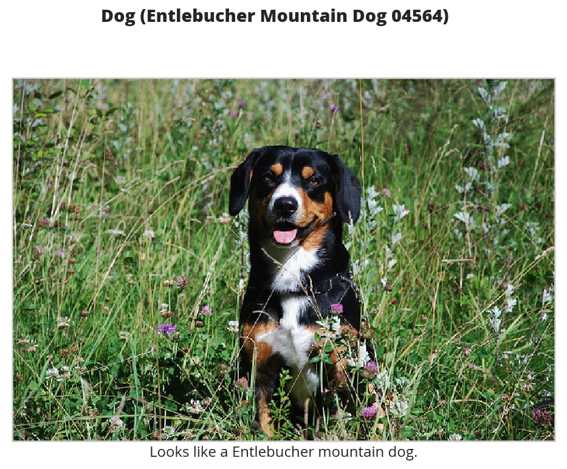
case = "rabbit.jpg"
classifier(case)
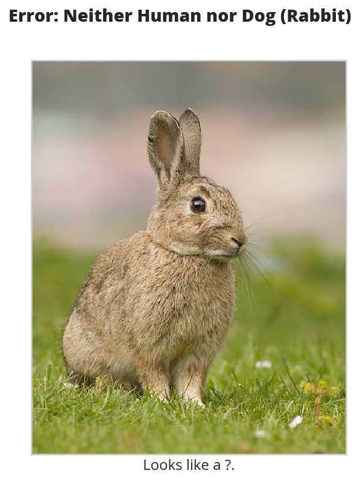
Rabbit image from Wikimedia.
{kind=link}
case = "hot_dog.jpg"
classifier(case)
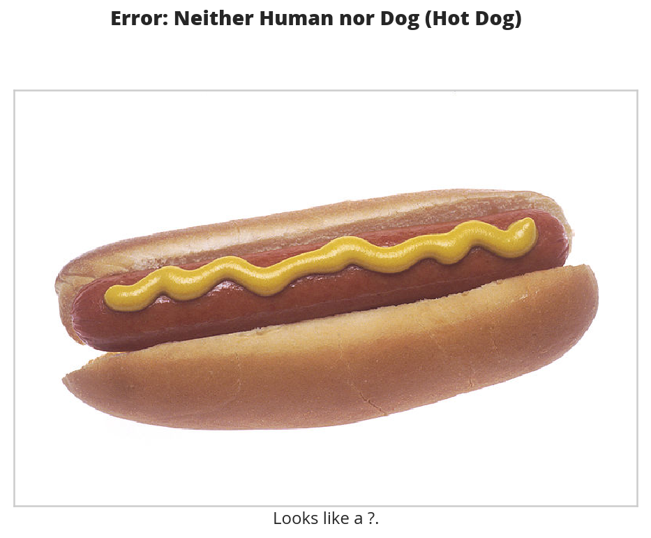
The Hot Dog is also from Wikimedia.
{kind=link}
case = human_files_short[34]
classifier(case)

So, somehow my class-based detector got smarter than my function based one and can now tell that this isn't a dog…